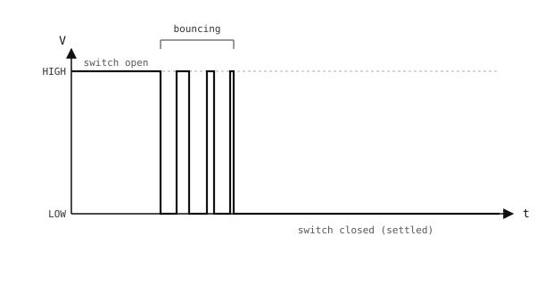

3.11. 去彈跳¶
開關在圖上被畫成一個完美的開合接點，但真實開關的接點並不會在兩種狀態之間乾淨俐落地切換。它們會抖動（chatter）──在穩定下來之前的數毫秒內反覆接通與斷開電氣接觸許多次。讀取該接腳的 GPIO 輸入會把這看成一連串的邊緣訊號；不夠謹慎的輪詢迴圈會把一次真實的按壓算成好幾次「按壓」，而中斷處理常式則會在實際一次按壓中執行好幾次。

彈跳的開關在穩定下來之前會產生一連串快速的轉態。¶
去彈跳（debouncing）是過濾抖動的做法，讓每一次實體按壓都只登錄為單一事件。有兩種方式可以解決這個問題──軟體（韌體中的計時規則）或硬體（線路上的小型濾波器）。兩者並非互斥。
3.11.1. 軟體去彈跳¶
其概念是記住輸入上次變化的時間，並拒絕在該時間戳記後一小段時間窗內的後續變化。接點彈跳通常持續不到 10 ms；一次真實的按壓需要 50 -- 100 ms；30 -- 50 ms 的時間窗能攔下所有彈跳，又不會擋掉真實的按壓。
在輪詢迴圈中，讀取接腳、與上一次的穩定值比較，並且只在去彈跳時間窗過去後才接受變化：
import time
from machine import Pin
button = Pin("P0", Pin.IN, Pin.PULL_UP)
last_state = 1
last_change = 0
DEBOUNCE_MS = 50
while True:
now = time.ticks_ms()
state = button.value()
if state != last_state and time.ticks_diff(now, last_change) > DEBOUNCE_MS:
last_change = now
last_state = state
if state == 0:
do_action()
time.sleep_ms(10)
對於中斷驅動的讀取，在處理常式內套用相同的計時規則，然後透過 micropython.schedule() 把真實的按壓交回主要環境處理（請參閱 GPIO 輸入）：
import time
import micropython
from machine import Pin
button = Pin("P0", Pin.IN, Pin.PULL_UP)
last_irq = 0
DEBOUNCE_MS = 50
def handle_press(pin):
do_action()
def on_press(pin):
global last_irq
now = time.ticks_ms()
if time.ticks_diff(now, last_irq) < DEBOUNCE_MS:
return
last_irq = now
micropython.schedule(handle_press, pin)
button.irq(handler=on_press, trigger=Pin.IRQ_FALLING)
ISR 依時間戳記過濾彈跳並將回呼函式排入佇列；handle_press 回到主要環境執行，在那裡進行記憶體配置與緩慢的 I/O 都是安全的。
3.11.2. 硬體去彈跳¶
硬體去彈跳在抖動到達接腳之前就以電氣方式將其過濾掉。標準的工具是電容器。
電容器是一種兩端的元件，用來儲存電荷。在物理上，它是兩片相隔一小段距離的導電板，中間以絕緣體（介電質）隔開。

平行板電容器：兩個導體之間以一層絕緣體隔開。¶
在端子間施加電壓會將大小相等、極性相反的電荷驅入兩片板；其關係為
Q = C × V
其中 Q 是儲存的電荷（庫侖），V 是電容器兩端的電壓，C 是其電容（法拉）。電容由元件的構造決定；電容越大，代表在相同電壓下儲存的電荷越多。
其結果是：電容器無法瞬間改變其電壓。流入或流出的電荷必須通過路徑上的任何電阻，而該電阻決定了電壓能以多快的速度變化。
3.11.2.1. RC 時間常數¶
透過電阻為電容器充電，會產生朝向供應電壓的平滑指數上升，而非一步階躍。該上升的特徵時間就是 RC 時間常數：
τ = R × C
經過一個 τ 之後，電容器已達到供應電壓的約 63 %。經過 5 個 τ 之後，超過 99 %──實務上可視為「完全充電」。

電容器沿著指數曲線充電。τ = RC 是達到最終電壓 63 % 所需的時間。¶
透過電阻放電則遵循鏡像的情形：電壓從初始值沿指數下降趨向零，在一個 τ 後降至起始電壓的 37 %，在 5 個 τ 後降至不到 1 %。

電容器沿著指數衰減放電。τ = RC 是降至起始電壓 37 % 所需的時間。¶
3.11.2.2. 去彈跳電路¶
在輸入接腳與接地之間接一個電容器，並透過一個串聯電阻供電，就構成了一個低通濾波器。快速的尖峰來不及透過該電阻為電容器充放電；接腳維持在尖峰出現前的電壓附近。緩慢的變化──刻意的按壓──則會為電容器充放電，讀數也隨之跟上。
R1 將開關的高側上拉到 Vcc，產生一個會彈跳的原始開關訊號。R2 與 C 接著將該訊號低通濾波後送入接腳：

硬體去彈跳：R2 與 C 在原始開關訊號到達接腳之前先將其低通濾波。¶
典型值：R1 = 10 kΩ（上拉）、R2 = 10 kΩ（串聯）、C = 100 nF。
當開關斷開時，電流流經 Vcc → R1 → R2 → 電容（串聯），以 τ_charge = (R1 + R2) × C = 2 ms 將電容充電至 Vcc。
當開關閉合時，開關節點被箝位到接地，電容僅透過 R2 向該接地放電，τ_discharge = R2 × C = 1 ms。
兩個邊緣都經過 RC 濾波。由於電容位於自己的節點上，且在開關側的 R2 下游，因此它能在 Vcc（斷開）與 0 V（閉合）之間乾淨地擺動──兩種情況在穩態下都不需要有電流流經 R1。
3.11.3. 在兩者之間做選擇¶
軟體是預設做法。它在零件上毫無成本，閾值容易調校，而且適用於 CPU 所讀取的任何接腳。
硬體在彈跳會到達 CPU 輪詢程式以外的某處時才值得付出零件成本──例如不能重複觸發的中斷、硬體計數器，或本身沒有濾波功能的周邊裝置。
軟體與硬體去彈跳也能和平共存：一個小型 RC 濾波器抑制最嚴重的尖峰，而軟體去彈跳時間窗則涵蓋剩下的部分。